작업 시간 재기, 마감 챙기기, 수입 정리까지 한 곳에서 해요.
내 캐릭터가 작은 도트 방에 살면서 옆에서 같이 일해 줘요.
윈도우용 무료 프로그램이에요!
SAMPLE화면 속 일정, 이름, 금액, 할 일은 모두 샘플이에요.
실제 사람이나 작업과는 관계없어요.
이미지 출처 · 배경 일러스트 모도님 · SD 캐릭터 개농님 · 프로필 사진 wash님 · 배너 차돌님
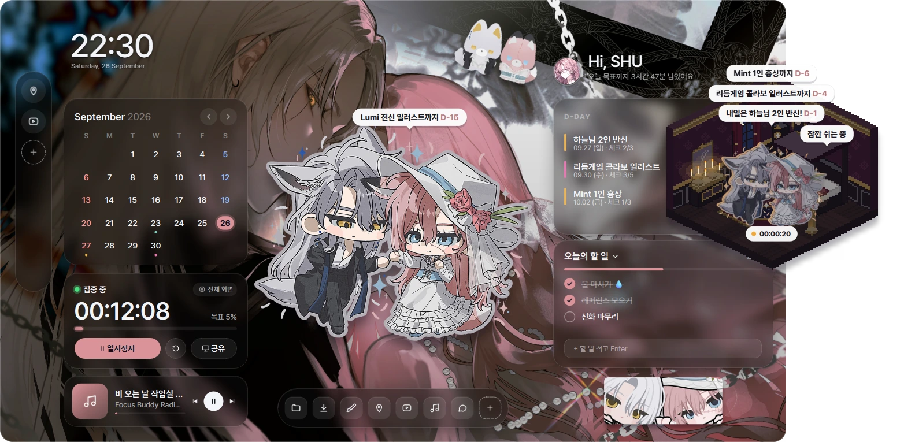
매주 연재, 매달 정산처럼 반복되는 일정을 일반 캘린더처럼 넣어요. 설정이 어디 있는지 헷갈리면 설정 창 맨 위에서 찾아요.
그리는 동안엔 타이머가 저절로 돌아가요.
손을 놓으면 ‘쉬는 중’으로 바뀌고, 오늘 얼마나 그렸는지 바로 보여요.
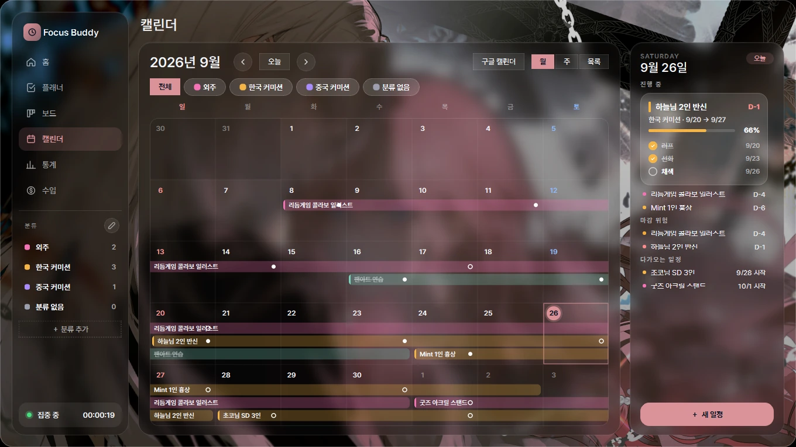
Focus Buddy는 화면의 움직임을 보고 시간을 재요.
그래서 아이패드 작업도 그대로 기록할 수 있어요.
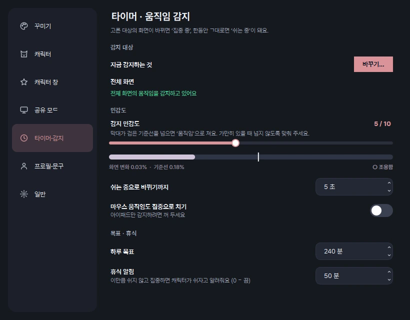
미니룸은 바탕화면 위에 따로 떠 있어요.
방 배경을 골라 두면 미니홈피처럼 꾸며지고, 말풍선으로 마감이랑 상태도 알려 줘요.
친구 캐릭터를 여러 명 같이 세울 수도 있어요.
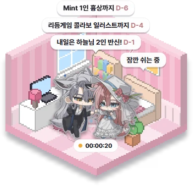
딸기우유 방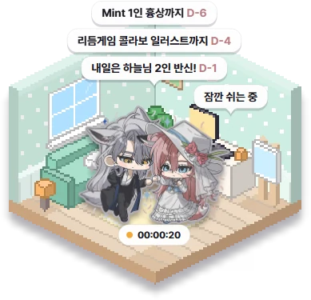
민트 작업실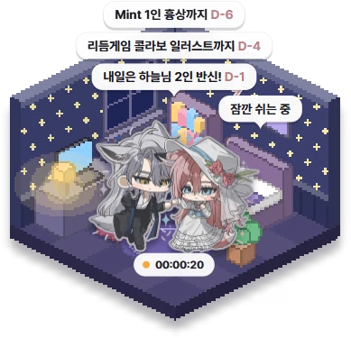
별밤 작업방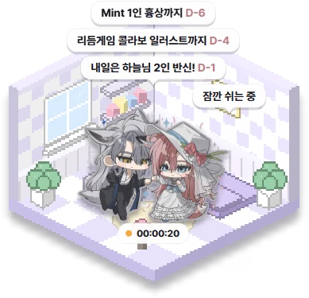
구름 라벤더 방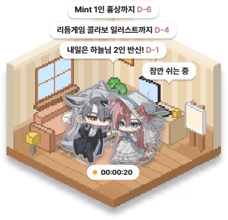
원목 아틀리에방 파일을 받으면
더블클릭 한 번으로
새 방이 추가돼요
캐릭터 방 더 받기 →
방을 더 받고 싶으면
여기서 받아 가세요
구글 · 디스코드 · 카카오 로그인
내 프로필과 @아이디 · 선물함
친구 · 미니홈피 · 방명록
방 꾸미기
프로그램 안 트레이 메뉴 → 곧 나올 기능에서도 볼 수 있어요. 계획은 바뀔 수 있어요.
어두운 방에 밝은 캐릭터가 붕 떠 보일 때가 있죠.
캐릭터만 살짝 어둡게 하고, 뒤에서 빛이 비치는 역광을 넣을 수 있어요.
방마다 따로 기억해요.
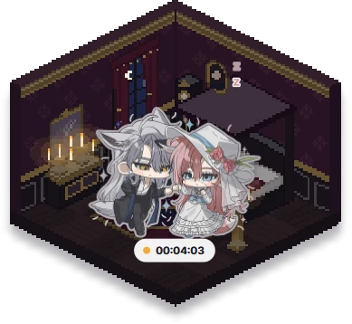
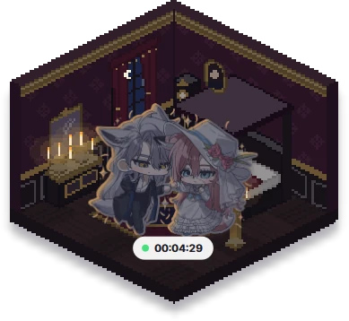
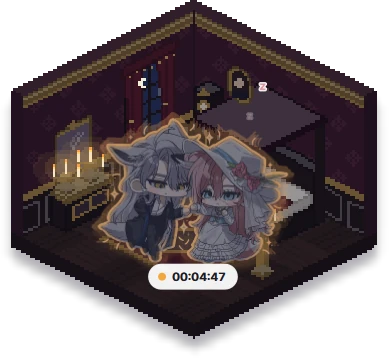
꾸민 방을 파일 하나로 뽑아서 보내면, 친구는 더블클릭만 하면 돼요.
직접 그린 그림으로 방을 만들 수도 있어요.
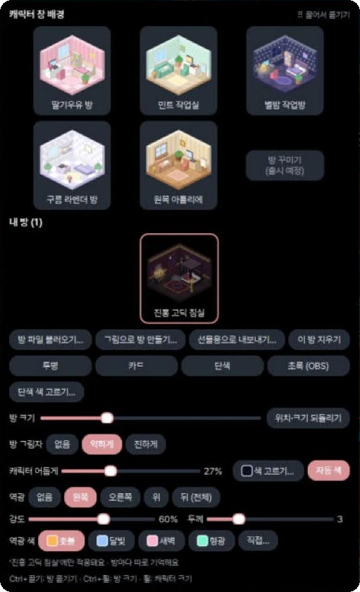
마감 관리, 작업 기록, 돈 정리를 그림 작업에 맞춰 만들었어요.
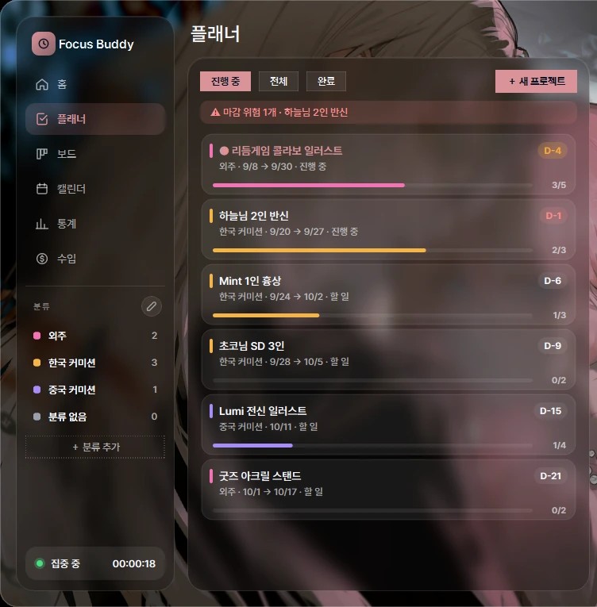
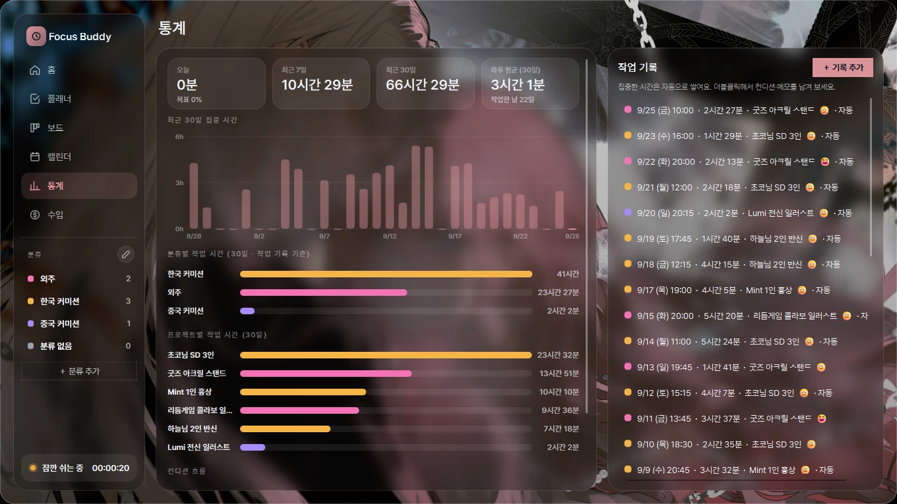
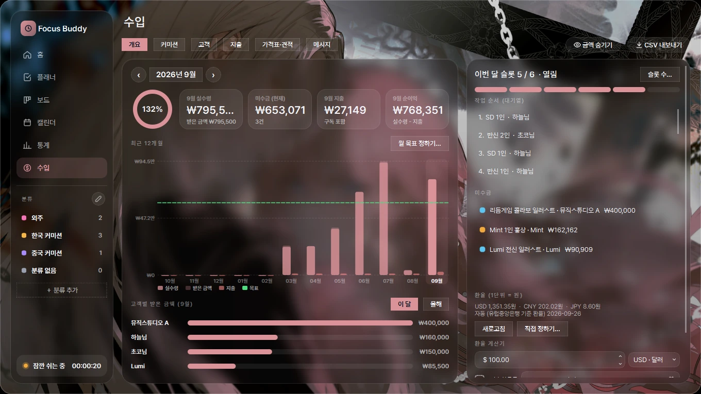
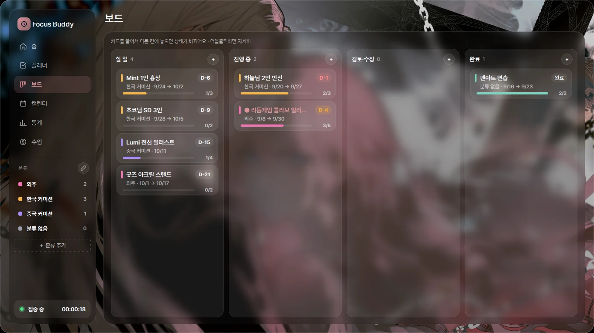
매일 켜 두는 프로그램이라, 귀찮은 걸 줄이는 데 신경 썼어요.
항상 최신 버전 고정 링크 (파일 이름엔 버전 없음) · https://github.com/shuna077/focusbuddy-releases/releases/latest/download/FocusBuddy-Setup.zip
내 일정이나 수입 기록은 내 컴퓨터에만 저장돼요.
어디로도 보내지 않아요.
컴퓨터를 바꿀 땐 설정 → 일반 → 백업 파일 만들기로 zip 하나를 챙겨 두세요.
새 컴퓨터에서 처음 켜면 그 파일을 찾아 불러올지 물어봐요.
버전을 눌러 펼쳐 보세요. 프로그램 안 업데이트 소식 창의 ‘지난 업데이트 모아 보기’와 같은 내용이에요.
OBS 쓰는 분: 목록 이름이 ‘Focus Buddy 미니룸’으로 바뀌었어요. 방송에 안 보이면 윈도우 캡처에서 창을 다시 골라 주세요.
궁금한 항목을 눌러 펼쳐 보세요.
프로그램 안에서도 F1을 누르면 같은 설명을 볼 수 있어요.
홈 화면 가운데 ‘이곳을 클릭해 캐릭터를 추가해보세요!’를 눌러요. 배경이 투명한 PNG(누끼 딴 그림)를 넣으면 스티커처럼 예쁘게 떠요. 움직이는 GIF · WEBP도 돼요.
오른쪽 위 연필 버튼(꾸미기 모드) → 배경에서 내 그림으로 바꿔요. 그림을 고르면 홈 화면에 보일 부분을 네모로 고를 수 있고, 그림에서 뽑은 색으로 테마가 저절로 맞춰져요.
오른쪽 위 🏠 집 모양 버튼을 누르면 바탕화면에 캐릭터가 따로 떠요. 마우스를 올리고 옆의 ◐ 미니룸 꾸미기 버튼을 누르면 작은 도트 방을 고를 수 있어요.
[예시]로 시작하는 일정과 할 일은 눌러서 고치거나 지워도 돼요.
타이머는 따로 시작 버튼을 누르지 않아도 화면 움직임을 보고 저절로 흘러가요.
예전에 쓰던 컴퓨터가 있다면: 처음 켤 때 백업 파일을 찾아서 “이전 백업에서 불러올까요?” 하고 물어봐요.
설정 → 말풍선 → ‘홈에서도 말풍선 쌓기’를 켜면 디데이 말풍선이 캐릭터 머리 위에 차곡차곡 쌓여요.
화면이 움직이는 동안은 ‘집중 중’, 한동안 그대로면 ‘쉬는 중’으로 바뀌어요. 멍하니 있던 시간은 빠져요.
미러링 프로그램으로 아이패드 화면을 컴퓨터에 띄우고, 설정 → 타이머·감지 → 바꾸기에서 그 창을 등록하면 끝이에요. 마우스 움직임까지 세고 싶지 않으면 ‘마우스 움직임도 집중으로 치기’를 꺼 두세요.
전체 화면 감지는 화면을 작게 줄여서 찍고, 마우스가 움직이는 동안엔 찍지 않아서 가벼워요 (2.25). 그래도 끊기면 ‘특정 창’으로 그림 프로그램만 골라 보세요.
미니룸은 내 캐릭터가 사는 작은 방이에요 (예전 이름: 캐릭터 창). 홈 화면 오른쪽 위 🏠 집 버튼으로 켜고 꺼요. 마우스를 올리면 옆에 버튼이, 오른쪽 클릭하면 모든 메뉴가 나와요.
맨 위 내 상태, 그 아래 방 · 캐릭터 · 말풍선 · 시간 · 음악 묶음, 그리고 캡처 · 홈 화면 열기 · 미니룸 설정. 설정 → 미니룸도 같은 이름으로 나뉘어 있어요.
어두운 방에 밝은 캐릭터가 붕 떠 보일 때 써요. 방마다 따로 기억해서, 방을 바꾸면 그 방의 설정으로 바뀌어요.
미니룸 꾸미기 창 아래쪽, 또는 미니룸 오른쪽 클릭 → 방 분위기에서 바꿔요.
새 부품을 쓰는 방은 최신 버전에서만 열려요. 안 열리면 업데이트를 먼저 해 주세요.
할 일 → 진행 중 → 검토·수정 → 완료. 카드를 끌어서 옮기면 상태가 바뀌어요.
월 · 주 · 목록으로 봐요. 구글 캘린더 주소를 넣으면 원래 쓰던 일정도 같이 보여요. 분류(외주, 커미션…)의 이름과 색은 연필 버튼으로 바꿔요.
설정 → 캐릭터(홈) · 미니룸 · 공유 모드의 말풍선 칸 → 말풍선 꾸미기…, 또는 미니룸 · 공유 창 오른쪽 클릭 → 말풍선에서 열어요.
‘이 모양을 다른 곳에도 적용’으로 한 번에 맞춰요. ‘처음 모양으로’는 지금 꾸미는 말풍선만 되돌려요.
일정 · 체크리스트 · 수입 · 통계 · 이름 · 프로필 · 알림 · 내 상태 목록. 인사말 문구는 처음 기본값으로 바뀌어요.
적용 전 모습은 자동으로 백업돼요. 글꼴은 이름만 들어가서, 받는 사람 컴퓨터에 없으면 기본 글꼴로 보여요.
아이콘 버튼에 마우스를 올리면 무슨 버튼인지 작은 이름표가 바로 떠요. 단축키가 있으면 같이 보여요. 설정 → 일반 → 버튼 이름표 보이기로 끌 수 있어요.
일정, 수입, 설정, 그림은 모두 내 컴퓨터의 데이터 폴더에만 저장돼요. 어디로도 보내지 않아요.
| Ctrl+Alt+P | 일시정지 / 다시 시작 |
| Ctrl+Alt+C | 미니룸 켜기 / 끄기 |
| Ctrl+Alt+S | 내 상태 바꾸기 |
| F1 | 앱 안 기능 설명 창 |
| Ctrl+Z · Ctrl+Y | 꾸미기 되돌리기 · 다시 하기 |
| Alt + 끌기 | 자석 잠깐 끄기 |
| 휠 (미니룸) | 캐릭터 크기 |
| Ctrl + 끌기 · 휠 (미니룸) | 방 위치 · 방 크기 |
| Shift + 끌기 (미니룸) | 캐릭터만 옮기기 |
오류 창의 ‘만든 사람에게 보내기’를 눌러 주세요. 보내기 전에 내용을 보여 주고, 일정 · 수입 · 그림은 보내지 않아요. 사용자 이름과 폴더 경로는 가려져요.
🐞 버그 제보하기로 알려 주세요. 설정 → 일반, 작업 표시줄 아이콘 메뉴, 미니룸 · 공유 창 오른쪽 클릭 메뉴에 있어요. 어떤 문제인지 · 어디서 생겼는지 고르고 한 줄만 적으면 돼요. Win+Shift+S로 잘라 둔 화면을 붙여 넣거나 Focus Buddy 창만 찍어서 사진도 같이 보낼 수 있어요.
‘애플리케이션 제어 정책에서 이 파일을 차단했습니다’가 뜨면 설치 폴더의 설치.bat으로 한 번 켠 뒤 설정 → 일반 → 바로가기 다시 만들기를 눌러 주세요. 작업 표시줄에 고정해 둔 아이콘도 같이 고쳐져요.
설정 → 타이머·감지에서 감지 대상을 확인해 주세요. ‘특정 창’이면 그 창이 최소화돼 있지 않은지, 일시정지 중은 아닌지 봐 주세요.
‘클릭 통과’가 켜져 있으면 눌리지 않아요. 설정 → 미니룸에서 꺼 주세요.
아니요. 일정 · 수입 · 꾸미기는 그대로이고, 업데이트 전에 자동 백업도 해 둬요.
설정 → 일반 → 저사양 모드를 켜 보세요. 미니룸의 숨쉬기 · 반짝이를 꺼도 가벼워져요.